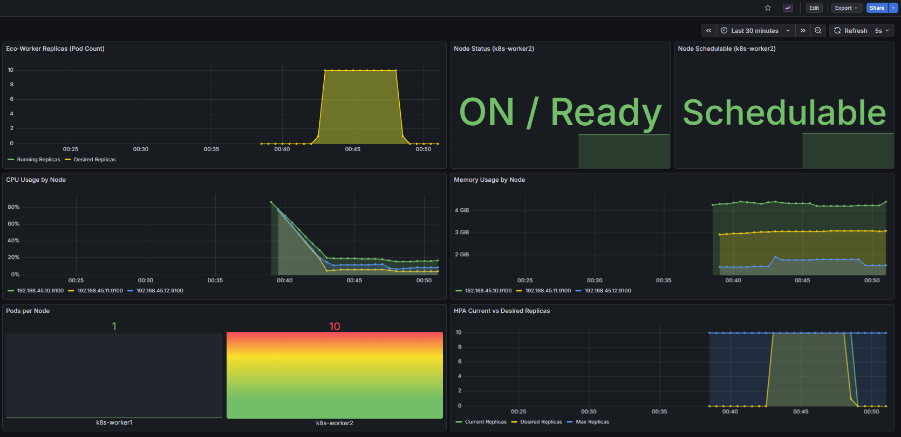

Bare-Metal GreenOps Platform
Eco-Kube
유휴 베어메탈 서버 전력을 0W로 만드는
이벤트 기반 물리 노드 자동 전원 제어 플랫폼
Problem
데이터센터 전력의 30%는 유휴 서버에서 낭비됩니다
퍼블릭 클라우드는 서버리스로 해결했지만, 온프레미스 베어메탈에서는 트래픽이 0이어도 서버가 24시간 가동됩니다.
유휴 서버 1대의 대기 전력은 ~300W, 연간 약 2,628 kWh.
Kubernetes HPA는 Pod 수만 조절할 뿐, 물리 서버 전원은 제어하지 못합니다.
Solution
트래픽이 없으면 물리 서버를 꺼버립니다 — 대기 전력 0W
Kafka 비동기 버퍼링 + KEDA 이벤트 기반 Zero-Scale + 커스텀 GreenOps Controller의 WOL/SSH 전원 제어를 결합.
유휴 Worker Node의 전력을 물리적으로 0W까지 절감합니다.
새 요청이 오면 Wake-on-LAN으로 수 초 내 부팅, 즉시 처리를 시작합니다.
Architecture
Upload → Kafka 10-Partition 버퍼링 → KEDA가 Lag 기반 Pod 0↔10 스케일링 → GreenOps가 물리 노드 WOL/Shutdown 제어
Core Components
Kafka KRaft
비동기 버퍼링
- ZooKeeper-free KRaft 모드
- 10 파티션 병렬 소비 구조
- Worker 0개에도 메시지 유실 없음
- 트래픽 폭주를 흡수하는 댐(Dam) 역할
KEDA
Zero-Scale 오토스케일링
- Consumer Lag 기반 (CPU 아닌 실제 작업량)
- minReplicas: 0 (완전 Zero Scale)
- maxReplicas: 10 (파티션 수 매칭)
- 30s cooldown으로 안정적 Scale-In
GreenOps
Controller
물리 노드 전원 제어
- Bash FSM 기반 상태 머신 직접 구현
- Pending Pod → WOL로 노드 부팅
- Empty Node → SSH로 Shutdown
- Descheduler 연동 · 10s 주기 감시
GreenOps Lifecycle
1
IDLE → SCALE-OUT
영상 업로드 → Kafka Lag 발생 → KEDA가 Worker 0 → 10개로 즉시 확장 (반응 < 2초)
2
SCALE-OUT → WAKE-UP
Worker1만으로 수용 불가 → Pod Pending → Controller가 Worker2에 WOL 전송 → 노드 부팅 → Uncordon
3
PROCESSING
10개 Worker가 Kafka 파티션 1:1 병렬 소비 → FFmpeg 영상 처리 → Lag 점진적 소모
4
SCALE-IN → SHUTDOWN
Lag 0 → 30s 쿨다운 → Pod 0 → Descheduler가 빈 노드 생성 → Controller가 SSH Shutdown (전력
0W)
Technology Stack
Kafka KRaft
Message Buffer
Descheduler
Pod Consolidation
Kepler
Power Monitor (eBPF)
Flask + Python
Application
Results — 300건 Stress Test
Design Decisions
왜 Kafka? (vs Redis Queue)
Worker 0개 상태에서도 메시지 유실이 없는 영속적 큐가 필수. Consumer Lag이라는 명확한 스케일링 지표를 KEDA에 제공.
왜 Bash FSM? (vs Go Operator)
kubectl, etherwake, ssh 등 CLI를 직접 호출하는 것이 핵심. 5개 상태를 100줄 Bash로 명확하게 구현하여 운영 편의성 확보.
Monitoring — Grafana + Kepler Dashboard

GreenOps Dashboard — Pod Replicas, Node Status, CPU/Memory, HPA
실시간 모니터링
.png)
Kepler Power Dashboard — eBPF 기반 노드별 전력 소비(Watts) 실시간 측정
Demo Video — Full Lifecycle
Troubleshooting
Kafka 파티션 확장 후 Consumer 불균형
증상10개 Worker 중 3개만 작업 처리, 7개는
Idle
원인파티션 3→10 변경 후 Consumer가 stale
metadata 유지
해결rollout restart로 metadata refresh →
10개 파티션 균등 소비 확인
KEDA Phantom Lag
증상처리 완료 후에도 Pod가 0으로 내려가지 않음
원인stale offset이 phantom lag 보고 → KEDA가
replica 유지
해결Consumer 재시작으로 offset 정리 → Lag 0 → 정상
Scale-In
WOL 패킷 미도달
증상WOL 명령 실행했으나 Worker2가 부팅되지 않음
원인etherwake가 eth0으로 전송, 실제 인터페이스는 ens33
+ BIOS WOL 비활성
해결etherwake -i ens33 + BIOS WOL 활성화 +
ethtool wol g 설정
Key Takeaways
Infrastructure as Software
물리 서버 전원이라는 하드웨어를 Kubernetes 이벤트와 연동하여 소프트웨어적으로 자동화. 클라우드 추상화 없이 bare-metal 전체 스택을 직접 제어.
Observability-Driven
Prometheus + Grafana + Kepler로 "측정 → 개선 → 증명" 사이클을 체험. eBPF 기반 전력 측정으로 에너지 절감을 정량적으로 검증.
Project Structure
eco-stream-greenops/
├── app/ — Flask 웹 앱 (Producer) + Worker (Consumer)
├── deploy/ — Kubernetes Deployment, Service, KEDA ScaledObject
├── manifests/ops/ — Prometheus, Grafana, Kepler, Descheduler
├── scripts/ — stress_test.sh, greenops-controller.sh
└── docs/ — 포트폴리오, 스크린샷, 시연 영상
Infrastructure Specs
k8s-master
- Control Plane (API, etcd, Scheduler)
- Kafka Broker (KRaft)
- GreenOps Controller
- IP: 192.168.45.10
k8s-worker1
- Primary Worker Node
- Eco-Web + Eco-Workers
- 항시 가동 (Always-On)
- IP: 192.168.45.11
k8s-worker2
- Elastic Node (ON/OFF 대상)
- GreenOps 제어 대상
- WOL 부팅 / SSH Shutdown
- IP: 192.168.45.12